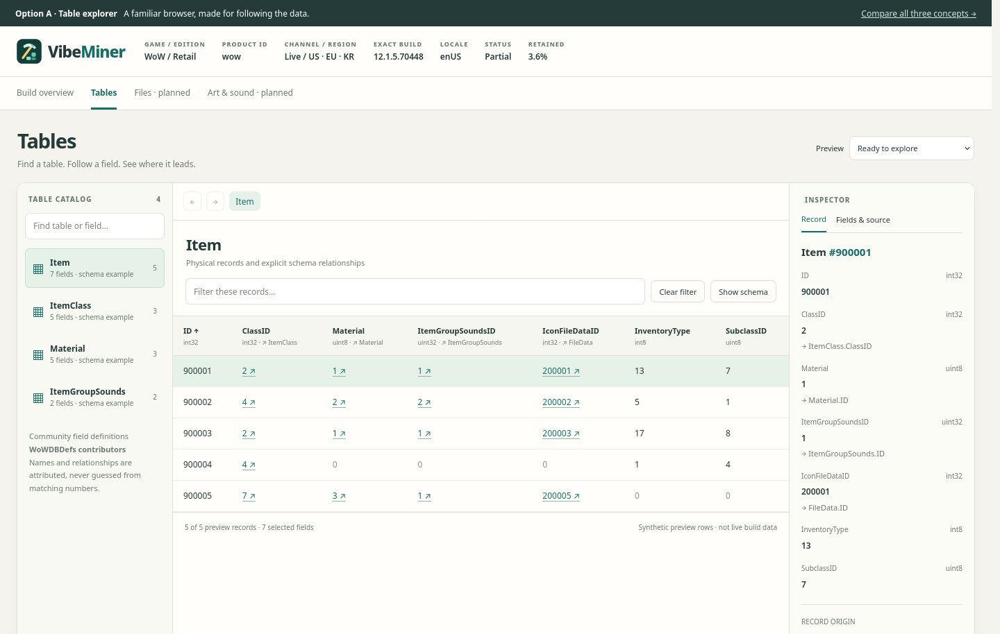

Explorer

A familiar three-pane layout: find a table on the left, browse its records in the center, inspect fields on the right. Follow a relationship and retrace your steps.
Open Explorer →
Three interactive directions for VibeMiner’s table browser. Stay in the selected build, inspect raw records and their column types, then follow declared relationships to explore connected tables.
Design prototypes, not implemented application screens. Records are authored examples; table and relationship definitions are researched separately against pinned WoWDBDefs sources. A definition’s existence does not prove compatibility with a selected build. Read the schema research · Review notes